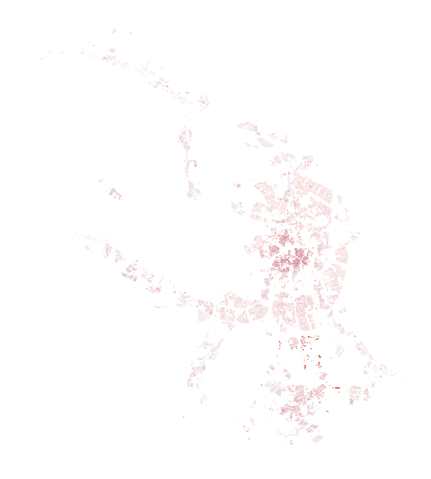

[2]:
import geopandas as gpd
buildings = gpd.read_parquet('./../data/platform/buildings.parquet').rename(columns={
'building_area' : 'footprint_area',
'storeys_count' : 'number_of_floors',
'population_balanced': 'population',
})[['geometry', 'is_living', 'footprint_area', 'number_of_floors', 'population', 'living_area']]
buildings.head()
[2]:
| geometry | is_living | footprint_area | number_of_floors | population | living_area | |
|---|---|---|---|---|---|---|
| 0 | POLYGON ((26319.490 6682759.262, 26315.099 668... | True | 95.155945 | 1.0 | 3 | 66.609161 |
| 1 | POLYGON ((26247.648 6682735.641, 26255.964 668... | True | 97.709000 | 1.0 | 0 | 68.396301 |
| 2 | POLYGON ((25121.683 6682189.882, 25110.493 668... | True | 706.651001 | 20.0 | 144 | 9893.114260 |
| 3 | POLYGON ((25099.575 6681917.845, 25097.969 668... | True | 721.190125 | 25.0 | 235 | 12620.827100 |
| 4 | POLYGON ((25138.368 6681976.699, 25150.524 668... | True | 1543.230220 | 21.0 | 337 | 22685.484400 |
Buildings
[3]:
from blocksnet.preprocessing.imputing import impute_buildings
buildings = impute_buildings(buildings)
2025-03-22 14:41:29.375 | WARNING | blocksnet.preprocessing.imputing.buildings.schemas:_before_validate:21 - Column build_floor_area not found and will be initialized as None
2025-03-22 14:41:29.375 | WARNING | blocksnet.preprocessing.imputing.buildings.schemas:_before_validate:21 - Column non_living_area not found and will be initialized as None
[4]:
buildings.head()
[4]:
| geometry | is_living | number_of_floors | footprint_area | build_floor_area | living_area | non_living_area | population | |
|---|---|---|---|---|---|---|---|---|
| 0 | POLYGON ((26319.490 6682759.262, 26315.099 668... | True | 1.0 | 95.155945 | 95.155945 | 66.609161 | 28.546783 | 3.0 |
| 1 | POLYGON ((26247.648 6682735.641, 26255.964 668... | True | 1.0 | 97.709000 | 97.709000 | 68.396301 | 29.312698 | 3.0 |
| 2 | POLYGON ((25121.683 6682189.882, 25110.493 668... | True | 20.0 | 706.651001 | 14133.020020 | 9893.114260 | 4239.905760 | 144.0 |
| 3 | POLYGON ((25099.575 6681917.845, 25097.969 668... | True | 25.0 | 721.190125 | 18029.753125 | 12620.827100 | 5408.926025 | 235.0 |
| 4 | POLYGON ((25138.368 6681976.699, 25150.524 668... | True | 21.0 | 1543.230220 | 32407.834620 | 22685.484400 | 9722.350220 | 337.0 |
[5]:
buildings[buildings.population>0].plot('population', cmap='RdYlGn', figsize=(10,10)).set_axis_off()

Services
[8]:
services = gpd.read_parquet('./../data/platform/school.parquet')
services.head()
[8]:
| geometry | capacity | |
|---|---|---|
| 0 | MULTIPOLYGON (((20052.971 6681274.597, 20064.0... | 448 |
| 1 | MULTIPOLYGON (((11237.313 6677237.236, 11255.6... | 698 |
| 2 | MULTIPOLYGON (((20636.615 6680834.563, 20659.2... | 2126 |
| 3 | MULTIPOLYGON (((-14715.947 6676494.498, -14711... | 1719 |
| 4 | MULTIPOLYGON (((-15507.145 6677446.344, -15490... | 735 |